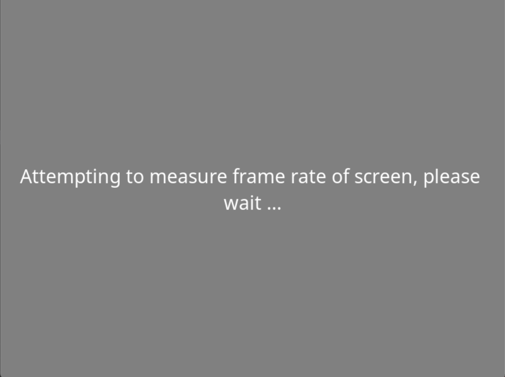
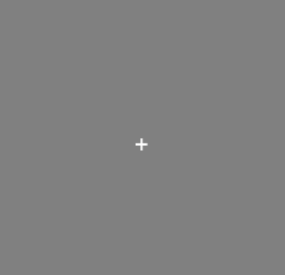
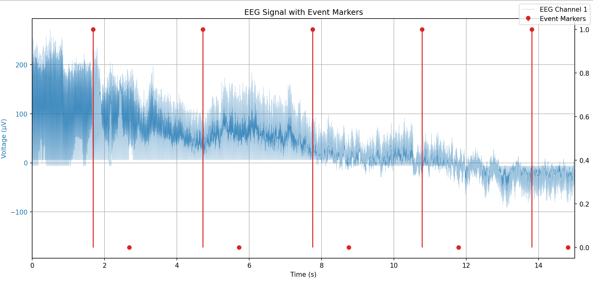

Software Triggers#
This tutorial will show you how to send digital event markers from PsychoPy into an active DSI data stream. Sending these markers is crucial for accurately synchronizing your stimuli with recorded neural activity.
Setting up the Stream#
The script below creates a simple LSL outlet stream. For a real DSI EEG experiment, this PsychoPy marker stream is intended to be recorded simultaneously alongside the separate data stream coming from your DSI Headset. LSL automatically time-synchronizes both streams, allowing you to perfectly align your stimulus events with the neural data during analysis. You will need extra tools in order to collect the data.
from psychopy import visual, core
from pylsl import StreamInfo, StreamOutlet
marker_stream_info = StreamInfo(
name='PsychoPyMarkers',
type='Markers',
channel_count=1, # Number of channels (1 for a single marker stream)
nominal_srate=0, # The rate is irregular, so we set it to 0
channel_format='int32', # Data type of the markers
source_id='some_id_12345' # A unique identifier
)
# Naming the channel
description = marker_stream_info.desc()
channels_node = description.append_child("channels")
ch_node = channels_node.append_child("channel")
ch_node.append_child_value("label", "EventMarker")
# Create the stream outlet
outlet = StreamOutlet(marker_stream_info)
Sending Markers#
This example runs a simple experiment that displays a fixation cross five times, each for one second. A corresponding marker is sent to the LSL outlet every time the fixation appears on screen. The win.flip() command is the precise moment the visual stimulus is displayed. By immediately pushing the marker with outlet.push_sample(), you ensure that the marker’s high-precision LSL timestamp is as close as possible to the actual time of the visual event.
# Set up the PsychoPy Window and Stimuli
win = visual.Window([800, 600], monitor="testMonitor", units="pix", color="gray")
fixation = visual.TextStim(win, text="+")
# Example Trial Loop (runs 5 times)
for trial in range(5):
fixation.draw()
# Show the stimulus and send the marker almost simultaneously
win.flip()
outlet.push_sample([1]) # This value can only be an integer
core.wait(1.0) # fixation appears for 1 second
outlet.push_sample([0])
# wait for 2s
win.flip()
core.wait(2.0)
win.close()
core.quit()
Latency
Depending on the complexity of your experiment, there might be latency in your marker.
Result#
Your screen should have something like this. The first image shows the starting screen then a simple cross will flash on your screen every few seconds.
 {kind=link}
{kind=link}
Consume Data#
The image below is the recorded data using LabRecorder. It displays one of the DSI stream with the data collected from the DSI headset, as well as the markers from the marker stream.
{kind=link}
Resources#
For more in-depth documentation and API reference, please refer to: